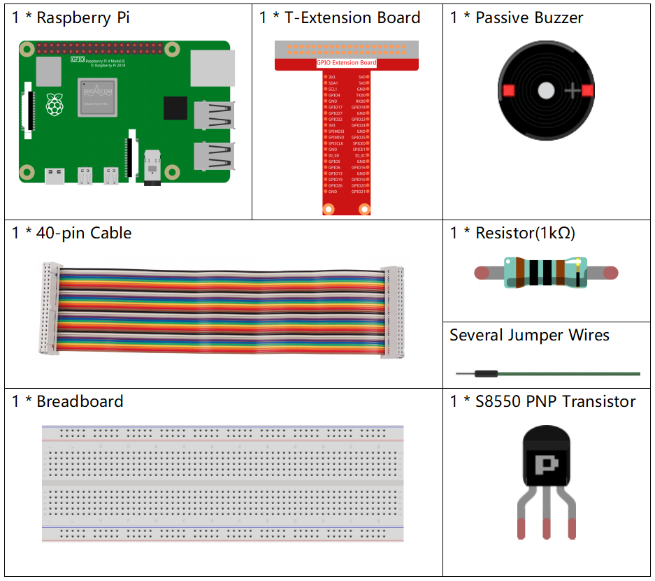

Nota
¡Hola! Bienvenido a la Comunidad de Entusiastas de SunFounder Raspberry Pi, Arduino y ESP32 en Facebook. Profundiza en Raspberry Pi, Arduino y ESP32 junto a otros entusiastas.
¿Por qué unirse?
Soporte Experto: Resuelve problemas post-venta y desafíos técnicos con la ayuda de nuestra comunidad y equipo.
Aprender y Compartir: Intercambia consejos y tutoriales para mejorar tus habilidades.
Avances Exclusivos: Accede anticipadamente a anuncios de nuevos productos y avances.
Descuentos Especiales: Disfruta de descuentos exclusivos en nuestros productos más nuevos.
Promociones Festivas y Sorteos: Participa en sorteos y promociones navideñas.
👉 ¿Listo para explorar y crear con nosotros? Haz clic en [Aquí] y únete hoy!
1.2.2 Zumbador Pasivo
Introducción
En esta lección, aprenderemos a hacer que un zumbador pasivo reproduzca música.
Componentes
Diagrama Esquemático
En este experimento, se utiliza un zumbador pasivo, un transistor PNP y una resistencia de 1k entre la base del transistor y GPIO para proteger el transistor.
Cuando se le envían diferentes frecuencias a GPIO17, el zumbador pasivo emitirá diferentes sonidos; de esta forma, el zumbador reproduce música.

Procedimientos Experimentales
Paso 1: Construir el circuito.

Paso 2: Cambiar de directorio.
cd ~/davinci-kit-for-raspberry-pi/c/1.2.2/
Paso 3: Compilar el código.
gcc 1.2.2_PassiveBuzzer.c -lwiringPi
Paso 4: Ejecutar.
sudo ./a.out
Al ejecutar el código, el zumbador reproducirá una melodía.
Nota
Si no funciona después de ejecutarlo, o aparece un mensaje de error: "wiringPi.h: No such file or directory", consulta c code is not working?.
Código
#include <wiringPi.h>
#include <softTone.h>
#include <stdio.h>
#define BuzPin 0
#define CL1 131
#define CL2 147
#define CL3 165
#define CL4 175
#define CL5 196
#define CL6 221
#define CL7 248
#define CM1 262
#define CM2 294
#define CM3 330
#define CM4 350
#define CM5 393
#define CM6 441
#define CM7 495
#define CH1 525
#define CH2 589
#define CH3 661
#define CH4 700
#define CH5 786
#define CH6 882
#define CH7 990
int song_1[] = {CM3,CM5,CM6,CM3,CM2,CM3,CM5,CM6,CH1,CM6,CM5,CM1,CM3,CM2,
CM2,CM3,CM5,CM2,CM3,CM3,CL6,CL6,CL6,CM1,CM2,CM3,CM2,CL7,
CL6,CM1,CL5};
int beat_1[] = {1,1,3,1,1,3,1,1,1,1,1,1,1,1,3,1,1,3,1,1,1,1,1,1,1,2,1,1,
1,1,1,1,1,1,3};
int song_2[] = {CM1,CM1,CM1,CL5,CM3,CM3,CM3,CM1,CM1,CM3,CM5,CM5,CM4,CM3,CM2,
CM2,CM3,CM4,CM4,CM3,CM2,CM3,CM1,CM1,CM3,CM2,CL5,CL7,CM2,CM1
};
int beat_2[] = {1,1,1,3,1,1,1,3,1,1,1,1,1,1,3,1,1,1,2,1,1,1,3,1,1,1,3,3,2,3};
int main(void)
{
int i, j;
if(wiringPiSetup() == -1){ //si la inicialización de wiring falla, imprime un mensaje en pantalla
printf("setup wiringPi failed !");
return 1;
}
if(softToneCreate(BuzPin) == -1){
printf("setup softTone failed !");
return 1;
}
while(1){
printf("music is being played...\n");
delay(100);
for(i=0;i<sizeof(song_1)/4;i++){
softToneWrite(BuzPin, song_1[i]);
delay(beat_1[i] * 500);
}
for(i=0;i<sizeof(song_2)/4;i++){
softToneWrite(BuzPin, song_2[i]);
delay(beat_2[i] * 500);
}
}
return 0;
}
Explicación del Código
#define CL1 131
#define CL2 147
#define CL3 165
#define CL4 175
#define CL5 196
#define CL6 221
#define CL7 248
#define CM1 262
#define CM2 294
Estas frecuencias corresponden a cada nota. CL se refiere a nota baja, CM a nota media, CH a nota alta, y 1-7 corresponden a las notas C, D, E, F, G, A, B.
int song_1[] = {CM3,CM5,CM6,CM3,CM2,CM3,CM5,CM6,CH1,CM6,CM5,CM1,CM3,CM2,
CM2,CM3,CM5,CM2,CM3,CM3,CL6,CL6,CL6,CM1,CM2,CM3,CM2,CL7,
CL6,CM1,CL5};
int beat_1[] = {1,1,3,1,1,3,1,1,1,1,1,1,1,1,3,1,1,3,1,1,1,1,1,1,1,2,1,1,
1,1,1,1,1,1,3};
El arreglo song_1[] almacena una partitura musical, donde beat_1[] refiere al ritmo de cada nota en la canción (0.5s por cada ritmo).
if(softToneCreate(BuzPin) == -1){
printf("setup softTone failed !");
return 1;
Esta función crea un pin de tono controlado por software. Puedes usar cualquier pin GPIO y la numeración de los pines será la que utilizaste en la función wiringPiSetup(). El valor de retorno es 0 para éxito; cualquier otro valor indica que debes verificar la variable global errnovariable para ver qué salió mal.
for(i=0;i<sizeof(song_1)/4;i++){
softToneWrite(BuzPin, song_1[i]);
delay(beat_1[i] * 500);
}
Se emplea una instrucción for para reproducir song_1.
En la condición de juicio, i<sizeof(song_1)/4, se utiliza «dividir por 4» porque el arreglo song_1[] es de tipo entero, y cada elemento ocupa cuatro bytes.
El número de elementos en song_1 (el número de notas musicales) se obtiene dividiendo sizeof(song_4) por 4.
Para permitir que cada nota se reproduzca durante beat * 500 ms, se llama a la función delay(beat_1[i] * 500).
El prototipo de softToneWrite(BuzPin, song_1[i]) es:
void softToneWrite (int pin, int freq);
Esta función actualiza el valor de frecuencia del tono en el pin dado. El tono no deja de sonar hasta que establezcas la frecuencia en 0.